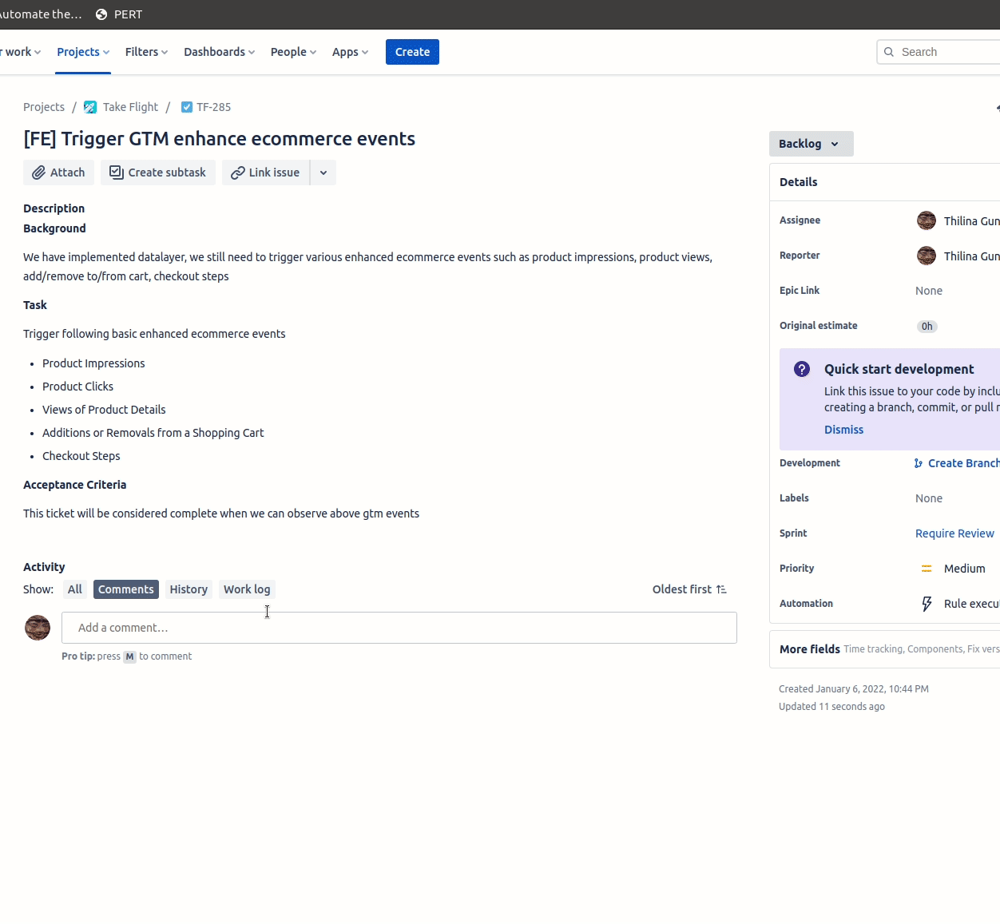

Drag above link to bookmarks bar
How to use
- Click on comment box to make it editable
- Click on bookmarklet in your bookmarks bar
- Fill in the boxes
- Click 'Add to Comment' button
Troubleshooting
To get this working in firefox, go to about:config and set dom.dialog_element.enabled to true
Changelog
- 2022-06-21
- Add better validation to input fields to avoid erroneous calculations.
- Remove fill Original Estimate field in JIRA ticket feature since JIRA doesnt allow you to change this field after its set and in some cases estimate time is not the best time to set the value here.
- Add feature to round totals. Also can set the default in configs per project.
- 2022-04-29
- Add minifiy modal button.
- Add project based default value content.
- Add automated tests row.
- Add warning if comment box is not in edit mode.
